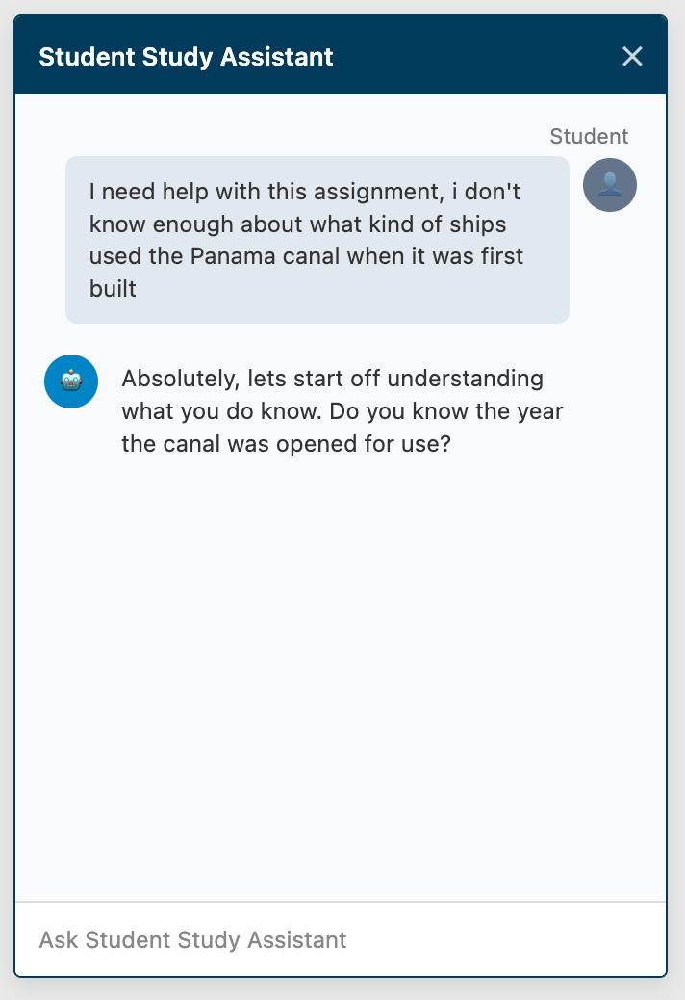
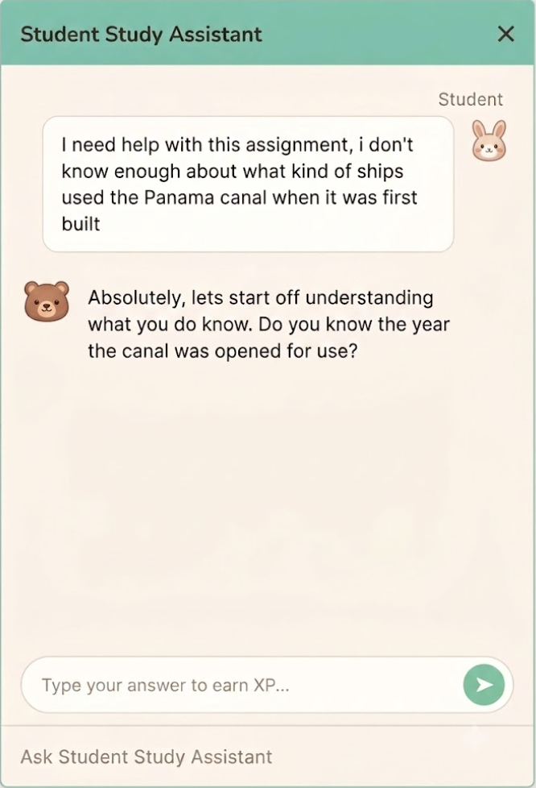

In 2024, Blackbaud looked for ways to monetize AI within their existing client base. The product team proposed a "Student Assistant" (code-named Study Buddy) as a premium offering.
We explored how schools felt about AI. While schools lacked formal policies, private school admins saw potential for AI to support mastery of a topic. However, teachers were hesitant about AI-generated grading, and there were valid concerns about inappropriate use or cheating.

Classrooms are stretched thin, and teachers can't be available 24/7. Students often get stuck on homework, leading to delayed help or frustration when they can't find clear answers.
If we integrate a 24/7, AI-powered tutor into our LMS, we can scale an educator's reach and provide personalized guidance without increasing the teacher's workload. We believe this will bridge the gap between instruction and independent study by acting as an interactive guide rather than an answer key.
We wanted students to be able to access the Student Assistant chat on the same page where the assignment is worked on.
We know the basic functionality that we want for the chat functionality, but we need to figure out what makes for an engaging chat UI for kids 5th–12th grade, and what makes for an engaging personality from the AI assistant.
Below is the existing chat UI design from our design system, which was designed to let non-profit accountants chat with AI agents. To the team's eyes, this design felt lifeless and dull, and not engaging to look at. There was also a distinct lack of personality behind the chat UI.
So we designed two different UI themes and put them in front of kids to get their feedback.

"This looks like my teacher's attendance app. It's kinda boring."
"The bunny and bear are cute, can I pick which one I wanted for me?"
"It's just like regular school software, I'm used to it."
"This one's better, but the bunny and bear feel too young for me. Could I choose the color scheme instead?"
"Honestly it's fine. Clean, gets the job done. Boring, but it works."
"This UI's actually way better, easier to read. But talking to a cartoon bear while studying for AP Euro?"
We piloted a sandboxed version of Study Buddy in 20 classrooms across English, History, and Social Studies. The results were surprising:
Low Engagement: Despite teacher encouragement, usage hovered around 15%, with few repeat users.
No Grade Impact: We saw no difference in grades for students who used the tutor.
Low Utility: Students only asked a few questions per assignment (2.4 on average), showing the tool just wasn't hitting the mark.
Interviews confirmed it: students were bored. The AI felt like a dry textbook, and they had no interest in reading more academic jargon. As one 6th grader put it: "My teacher might not be exciting, but they're still better than a school book."
We pulled the plug. While we knew it was failing, the "why" took a moment to uncover. This early call let us pivot to an AI tool for teacher report cards, saving our small team six months of wasted effort: a perfect case for why UX matters in the product lifecycle.
A year later, Khan Academy retired their study assistant Khanmigo. Their post-mortem aligned with what we found: